El Problema Invisible: Microplásticos
Descubre cómo estas diminutas partículas están afectando a nuestro planeta y a nuestra salud.
¿Qué son los microplásticos?
Los microplásticos son fragmentos de plástico de menos de 5 milímetros de longitud. Se originan de la degradación de plásticos más grandes (plásticos secundarios) o son fabricados intencionalmente para productos de cuidado personal (plásticos primarios).
Incluso existen categorías más pequeñas como los nanoplásticos (menores a 0,001 mm o 1 micrómetro), que son aún más difíciles de detectar y estudiar.
Su impacto en el medio ambiente
Estas partículas se encuentran en todos los ecosistemas, desde las profundidades del océano hasta la cima de las montañas. Los animales marinos y terrestres los confunden con alimento, lo que puede causarles obstrucciones digestivas y malnutrición. Además, pueden transportar químicos tóxicos.
Los microplásticos actúan como "balsas" que permiten a especies invasoras (bacterias, algas, pequeños invertebrados) viajar largas distancias y colonizar nuevos ecosistemas donde alteran el equilibrio natural.
 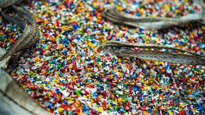
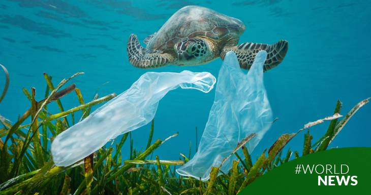
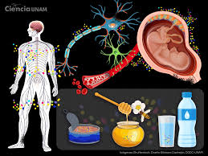
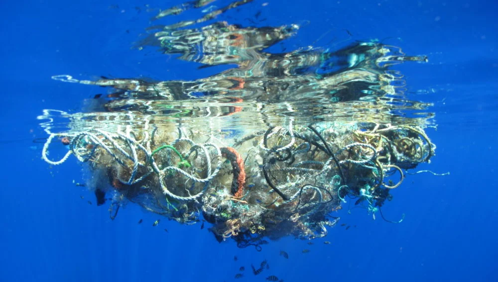
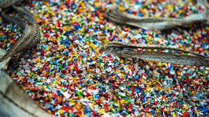
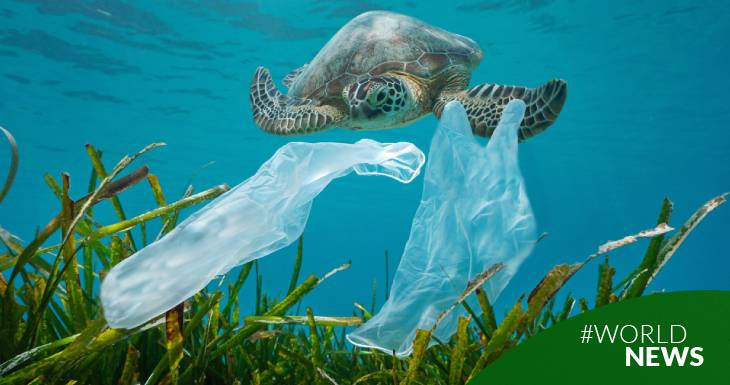
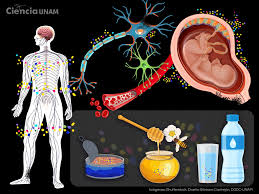
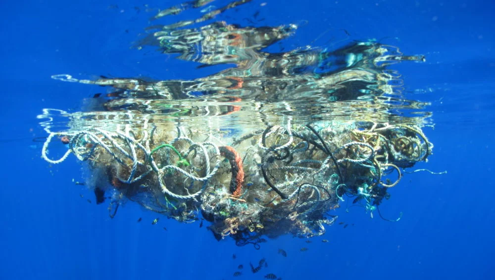
Impacto en la Atmósfera
Los microplásticos (sobre todo fibras) son lo suficientemente ligeros como para ser levantados por el viento y transportados largas distancias. Se han encontrado en la atmósfera de ciudades, en áreas remotas como los Pirineos e incluso en el Ártico.
Estos microplásticos en el aire eventualmente caen con la lluvia o la nieve, contaminando suelos y cuerpos de agua lejos de su origen. Es un vector de contaminación global.
¿Qué podemos hacer?
Prohibir los microplásticos primarios: Muchos países ya han prohibido la venta de cosméticos y productos de cuidado personal que contengan microesferas de plástico (exfoliantes, pastas de dientes). Esta prohibición debe ser global y extenderse a otros productos.
La solución comienza con la reducción de nuestro consumo de plásticos de un solo uso. Reciclar, reutilizar y apoyar iniciativas que promuevan alternativas sostenibles son pasos cruciales para combatir la contaminación por microplásticos.
 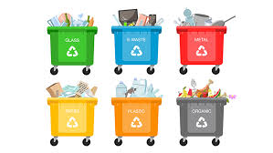
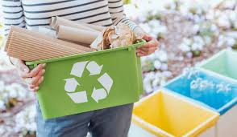
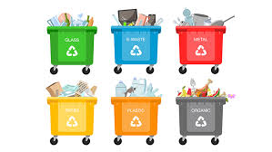
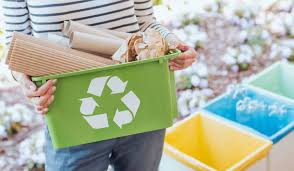